Four references × three sensing modes, same model, same renderer, isolated workspaces.
A is vision only. B adds the precomputed interrogate fact sheet. C adds the live
score/pixdiff/zoom loop. SSIM and RMSE are pixel truth; score is semantic and
normalized against each reference's self-ceiling (ref1-collage 93.4 · ref2-knob 89.6 · ref3-bp 96.6 · ref4-flight 96.9).
['
reference
arm
SSIM↑
mismatch↓
RMSE↓
score
self-est
', '
KODOR collage
A — vision only
0.833
16.7%
0.123
67.5/93.4
7
', '
KODOR collage
B — vision + interrogate facts
0.885
9.2%
0.105
76.1/93.4
6
', '
KODOR collage
C — vision + live score/pixdiff/zoom
0.907
9.1%
0.096
72.5/93.4
7
', '
Knob / keycap
A — vision only
0.692
26.5%
0.124
50.8/89.6
5
', '
Knob / keycap
B — vision + interrogate facts
0.856
7.7%
0.073
63.8/89.6
6
', '
Knob / keycap
C — vision + live score/pixdiff/zoom
0.870
6.1%
0.072
63.8/89.6
6
', '
BP widget
A — vision only
0.544
20.7%
0.117
51.3/96.6
6
', '
BP widget
B — vision + interrogate facts
0.928
4.7%
0.047
77.8/96.6
7
', '
BP widget
C — vision + live score/pixdiff/zoom
0.910
4.7%
0.039
77.8/96.6
7
', '
Flight card
A — vision only
0.665
12.9%
0.160
76.4/96.9
7
', '
Flight card
B — vision + interrogate facts
0.889
6.1%
0.060
89.1/96.9
8
', '
Flight card
C — vision + live score/pixdiff/zoom
0.864
6.8%
0.059
78.5/96.9
8
', '
']
KODOR collage
1520×794 · UI screens, real typography
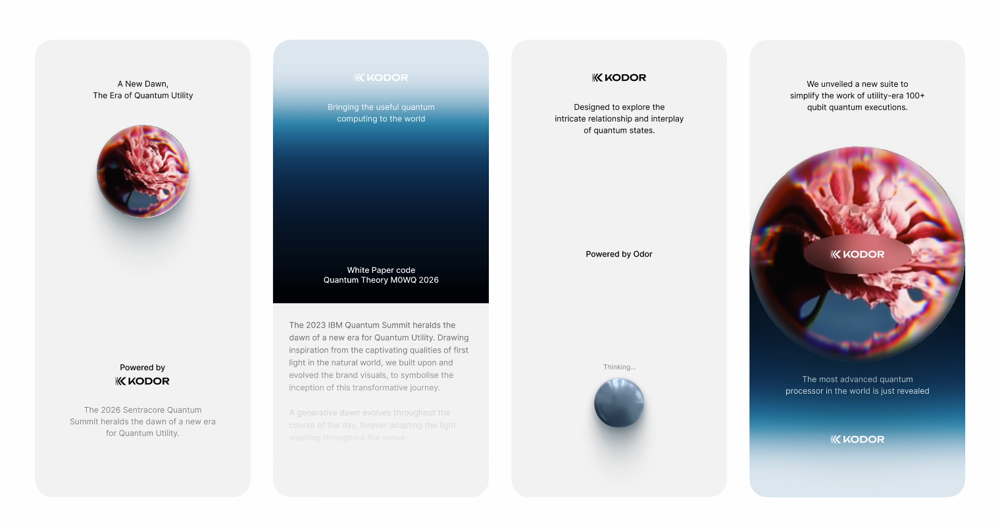
REFERENCE
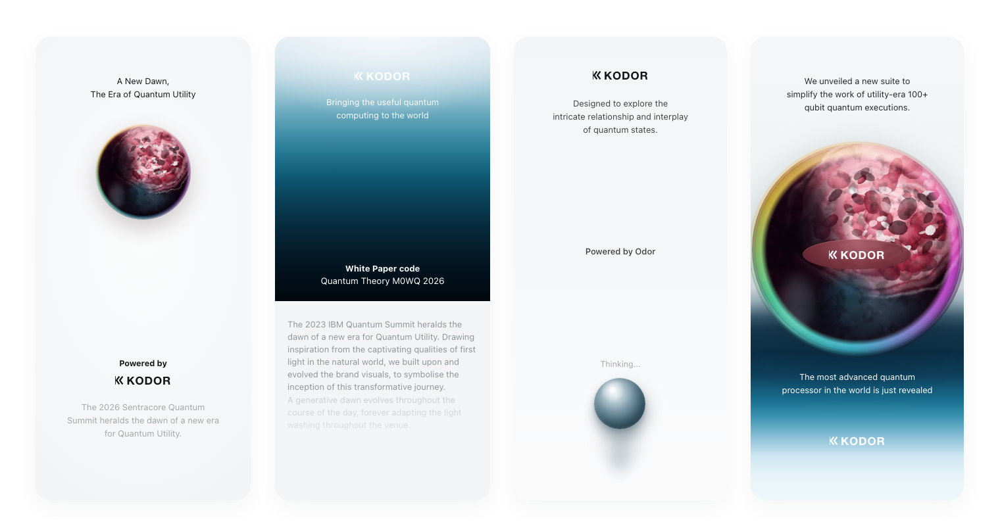
ARM A — vision only
SSIM 0.833mismatch 16.7%RMSE 0.123score 67.5/93.4
palette 0.46 · objects 0.60 · layout 0.79 · text 0.81 · scene 1.00
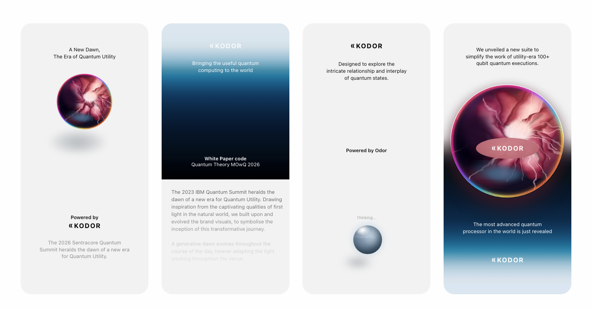
ARM B — vision + interrogate facts
SSIM 0.885mismatch 9.2%RMSE 0.105score 76.1/93.4
palette 0.72 · objects 0.85 · layout 0.82 · text 0.89 · scene 0.31
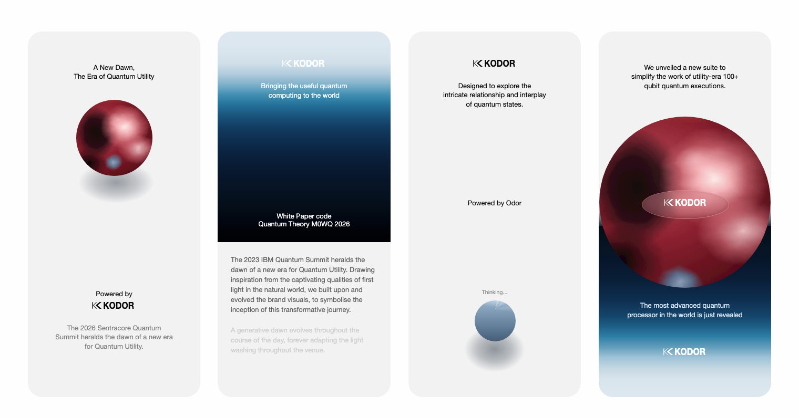
ARM C — vision + live score/pixdiff/zoom
SSIM 0.907mismatch 9.1%RMSE 0.096score 72.5/93.4
palette 0.70 · objects 0.87 · layout 0.64 · text 0.88 · scene 0.31
Knob / keycap
438×393 · 3D product render, teal rim light
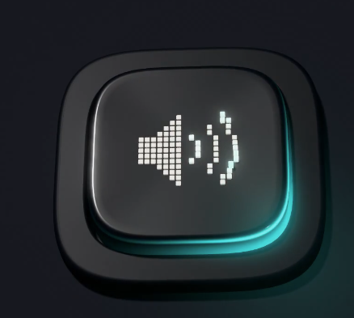
REFERENCE
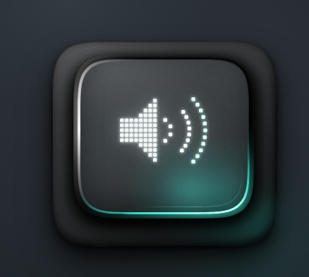
ARM A — vision only
SSIM 0.692mismatch 26.5%RMSE 0.124score 50.8/89.6
palette 0.03 · objects 0.69 · layout 0.97 · text 0.00 · scene 1.00
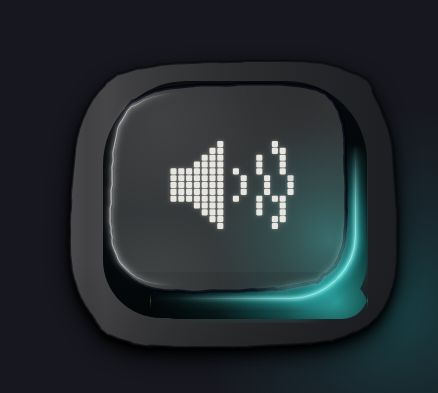
ARM B — vision + interrogate facts
SSIM 0.856mismatch 7.7%RMSE 0.073score 63.8/89.6
palette 0.33 · objects 0.60 · layout 0.98 · text 1.00 · scene 0.31
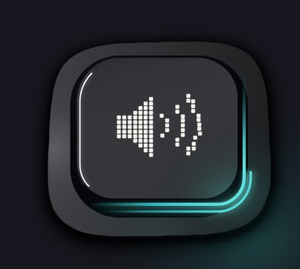
ARM C — vision + live score/pixdiff/zoom
SSIM 0.870mismatch 6.1%RMSE 0.072score 63.8/89.6
palette 0.29 · objects 0.64 · layout 0.97 · text 1.00 · scene 0.28
BP widget
394×210 · dark UI, pink ECG + glow
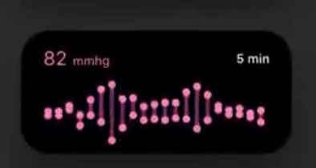
REFERENCE
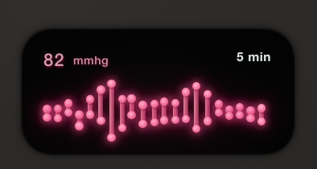
ARM A — vision only
SSIM 0.544mismatch 20.7%RMSE 0.117score 51.3/96.6
palette 0.46 · objects 0.56 · layout 0.16 · text 1.00 · scene 0.47
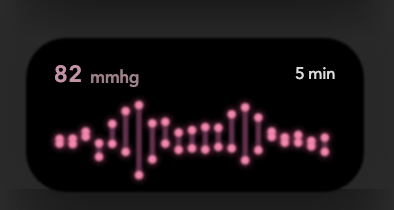
ARM B — vision + interrogate facts
SSIM 0.928mismatch 4.7%RMSE 0.047score 77.8/96.6
palette 0.79 · objects 0.72 · layout 0.58 · text 1.00 · scene 1.00
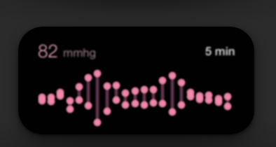
ARM C — vision + live score/pixdiff/zoom
SSIM 0.910mismatch 4.7%RMSE 0.039score 77.8/96.6
palette 0.80 · objects 0.58 · layout 0.98 · text 1.00 · scene 0.58
Flight card
400×155 · dark UI, turquoise progress line
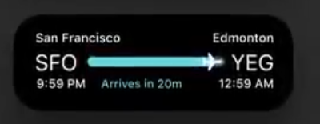
REFERENCE
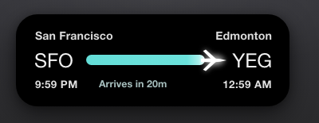
ARM A — vision only
SSIM 0.665mismatch 12.9%RMSE 0.160score 76.4/96.9
palette 0.64 · objects 0.56 · layout 0.97 · text 0.94 · scene 1.00
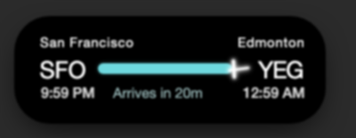
ARM B — vision + interrogate facts
SSIM 0.889mismatch 6.1%RMSE 0.060score 89.1/96.9
palette 0.78 · objects 0.85 · layout 0.99 · text 0.96 · scene 1.00
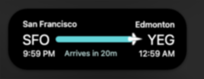
ARM C — vision + live score/pixdiff/zoom
SSIM 0.864mismatch 6.8%RMSE 0.059score 78.5/96.9
palette 0.80 · objects 0.74 · layout 0.99 · text 0.95 · scene 0.22
Self-ceiling is the score an identical image receives — the palette component tops out at
top-8-bin coverage, so 100 is unreachable (see REPORT.md).